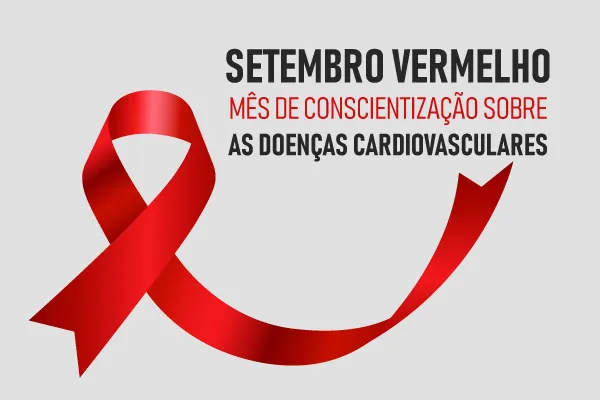

O Setembro Vermelho é uma campanha nacional de conscientização a respeito das doenças cardiovasculares, um dos tipos de doenças que mais vitimam pessoas no Brasil anualmente. A campanha busca orientar a população a respeito dessas doenças, incentivando-a a adotar um estilo de vida mais saudável para se prevenir delas.

O Setembro Vermelho é uma campanha nacional que busca realizar uma conscientização acerca das **doenças cardiovasculares**, trazendo essas doenças ao foco da opinião pública e permitindo que a população possa ser conscientizada a respeito da gravidade delas. A campanha busca orientar a população reforçando a importância da prevenção e do diagnóstico precoce.
O Setembro Vermelho se originou por volta de 2014, quando o Instituto Lado a Lado pela Vida criou uma campanha que buscava conscientizar a população a respeito das doenças cardiovasculares. Essa campanha foi estabelecida em setembro e se tornou uma precursora do Setembro Vermelho no Brasil.
A escolha do mês de setembro foi proposital, uma vez que esse mês é marcado pela celebração do Dia Mundial do Coração, data celebrada em 29 de setembro e que foi estabelecida no ano de 2000 pela Federação Mundial do Coração, instituição que atua com reconhecimento das Nações Unidas.
No Brasil, o Setembro Vermelho foi oficializado em 2023** pela Lei nº 14.747, de 5 de dezembro de 2023, reforçando seu status como uma campanha fundamental para a saúde pública.
O Setembro Vermelho é uma campanha de grande importância porque trata dedoenças que afetam milhões de pessoas e que causam milhares de mortes anualmente. A campanha é importante por trazer orientação à população a respeito dessas doenças, garantindo acesso a informações de qualidade e também incentivando a população a manter hábitos saudáveis.
Além disso, a campanha visa permitir que a população tenha acesso a informações relevantes a respeito das doenças cardiovasculares; orientar sobre as formas de prevenção; incentivar um estilo de vida saudável; reforçar a importância do diagnóstico precoce e mobilizar o poder público para garantir a prevenção e o acesso a tratamento médico de qualidade à população.
Políticas públicas podem ser criadas pelo poder público com base na mobilização do Setembro Vermelho a fim de combater as doenças cardiovasculares. E atos simbólicos, como decorar prédios públicos com a cor vermelha, reforçam a importância da campanha e chamam a atenção da população para o tema.
Acesse também: Junho Vermelho — campanha que busca incentivar as pessoas a doarem sangue